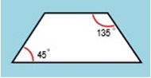
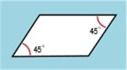
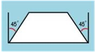
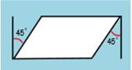
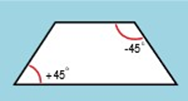
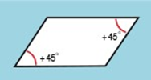

Parts lists
Many companies include parts lists in their assembly drawings to give additional information about individual assembly components. For example, part number, material, and the quantity of parts required are typically documented in a parts list.
A Solid Edge parts list on a drawing is associative to the part view you select to create it. You can add balloons automatically to the drawing, and the balloons can be numbered to correspond to the part entries in the parts list.

Creating parts lists
There are two commands for producing parts lists:
-
To create a parts list for a family of assemblies (FOA) document, use the Home tab→Tables group→Family of Assemblies Parts List command
 . For more information, see Create a family of assemblies parts list.
. For more information, see Create a family of assemblies parts list. -
For all other assembly parts lists, use the Home tab→Tables group→Parts List command
 . To learn the basic procedure, see Create a parts list. You also can create variations on this:
. To learn the basic procedure, see Create a parts list. You also can create variations on this:
Specifying content and format of a parts list
Before you place the parts list on the drawing sheet, you can use the pages in the Parts List Properties dialog box to format it the way you want.
The parts list consists of a title (A), column header (B), and column data (C).

After you place the parts list, you can change the content of parts list titles and headings, and modify the formatting of cells, by double-clicking the parts list and editing it directly on the sheet.
Setting up part properties for the parts list
You can include part properties such as Title, Document Number, Mass, and Material in your parts lists. Use the Columns tab of the Parts List Properties dialog box to set up a column for each property you want in the parts list. The properties themselves are defined in the part and sheet metal documents, using these commands on the File menu:
-
Info tab→File Properties command
-
Info tab→Material Table command
You also can use the Property Manager command to view and edit the document properties for a parts list. Working in a drawing of an assembly, the Property Manager command displays the document properties for all the parts in the assembly. This makes it easy to ensure that the parts list displays accurate and complete information about the assembly.
You can define part properties without opening the part or sheet metal document in Solid Edge. Select the document in Windows Explorer, and then right-click and choose the Properties command.
For an example of how you can define a custom property and display it in a parts list, see Example: Show custom properties and materials in a parts list.
Accounting for non-graphic parts
Assemblies often contain components for which there is no model required, such as paint, grease, oil, labels, and so on. These non-graphic parts must still to be documented in the parts list and bill of materials that are created for the assembly. In Solid Edge, you can use the File Properties command on the File menu in the Part and Sheet Metal environments to add custom properties to an empty part document. Use the custom properties to define the required information for these types of parts. You can create two types of non-graphic parts: parts that require a unit type and quantity, and parts without a unit type and quantity.
For more information, see Non-graphic parts in assemblies.
Using multiple parts lists
You can create multiple parts lists for the same drawing. With multiple parts lists, you can have different item numbers for the same parts. You also can create parts lists that contain only specific component types (pipes, for example).
To create parts lists that share the same item numbers, you can designate an active parts list. Then, when you create other parts lists, use the Link To Active button on the Parts List command bar to link them.
You can make a different parts list the active parts list by selecting the Make Active command on the shortcut menu with the parts list selected. When you create a new parts list, it becomes the active parts list.
Updating parts lists
Parts lists are similar to part views; when the parts list is not up-to-date, a gray outline is displayed around the parts list to indicate that it needs updating. For example, if you edit the part properties, you must update the parts list to display the changes. The Update command on the shortcut menu updates the parts list.
Solid Edge does not check the file time stamp to determine whether a parts list is out-of-date. Rather, the software computes the parts list in memory from cached properties and compares it to existing parts list data. If there are differences, the parts list becomes out of date.
Also, if mass is included in the parts list, the software uses the geometric time stamp of the model references to determine whether the parts list is out of date. This out-of-date check occurs during document transition (for example, when you open or save a file), during parts list updates, and when a drawing view using the same assembly the parts list references is created, updated, or deleted.
Creating a custom table style
You can use the Style command to create your own, fully customized Table styles for parts lists. For example, you can define line color for the table border, grid, and heading dividers.
When you place a parts list on the drawing, you can select a custom table style using the Table Style list on the Parts List command bar.
For more information, see these help topics:
Creating reports for pipes and frames
You can use options on the Options tab (Parts List Properties) dialog box, Format Report dialog box, and Item Numbers page (Solid Edge Options dialog box) to define criteria when creating reports for frames and pipes. You can differentiate between pipe angles when creating pipe reports.
With these options you can create reports that:
-
Place unique frames or pipes on separate rows based on the direction of angle inclination.
-
Use + and - or clockwise and counterclockwise prefixes as a parameter for uniqueness in the parts list.
-
Differentiate between frames or pipes based on angle rotation.
-
Display correct end angles.
-
Use a customized string in a parts list for frame ends that are not planar.
Parts list column results
The following illustrates the results of how the frames are measured based on the column options you define.
|
Parts list column name |
Results |
|
|---|---|---|
|
Retains legacy Miter Angle values. |
|
|
 Internal angles are reported for frame or pipe end faces facing in the opposite direction. |
 Internal angles are reported for frame or pipe end faces facing in the same direction. |
|
 |
 |
|
End angles are measured with respect to a plane which is perpendicular to the path of the frame or pipe. |
||
|
Unique representation: (+) and (-) prefixes shown in example (+) changes to CCW and (-) changes to (CW) |
 End faces facing in opposite directions display opposing prefixes. |
 End faces facing in opposite directions display same prefixes. |
How do I
Create a parts listCreate a subassembly parts list
Create an exploded parts list
Create a total length parts list
Create a parts list for flexible hoses and tubing
Create a family of assemblies parts list
Exclude parts from an exploded parts list
Open a model from a parts list
Example: Show custom occurrence properties in a parts list
Example: Show custom properties and materials in a parts list
Example: Show sheet metal material thickness in a parts list
Renumber a parts list
Change the active parts list
Display assembly occurrences in a drawing view or parts list
Convert a parts list to a table
Copy a parts list to the clipboard
Learn more
Family of Assemblies (FOA) parts listsAssembly part views and parts lists
Subassembly drawing views and parts lists
Exploded parts lists
Custom occurrence properties in parts lists
Occurrence quantity overrides in parts lists
Item numbers in parts lists
Saving and reusing the parts list format
Look up more details
Parts List commandParts List command bar
Parts List Properties dialog box
Copy Contents command
Convert To Table command